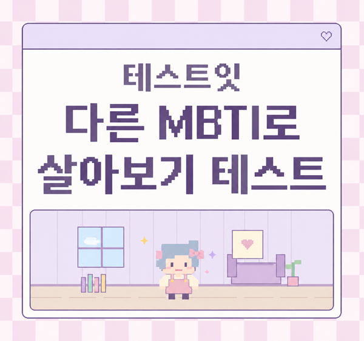

테스트잇
성격
얼굴
그외
사주
테스트잇 다른 MBTI로 살아보기 테스트

테스트 시작하기
오늘의 MBTI
♡ ✦ ♡
두구두구두구…
어떤 MBTI로 살게 될까?
✦
????
✦
NEW LIFE START
♡
✦
이 성격으로 시작하기
LIFE PLAY
♡ □
✦
▼
지금 나는…
결과 확인 중
♡ ✦ ♡
과연
로
잘 살았을까요?
✦
테 스 트 잇
♡ ✦ ♡
테스트잇
다른 MBTI로 살아보기 테스트
♡ PLAYER ♡
점
10 / 10 COMPLETE
✦
✦
결과 이미지 저장하기
다시 해보기
다른 테스트 해보기
테스트 공유하기
오늘의 다른 나, 저장해두기
모바일에서는 이미지를 꾹 눌러 저장해주세요.
PC에서는 이미지에 마우스 오른쪽 버튼을 눌러 저장해주세요.
닫기